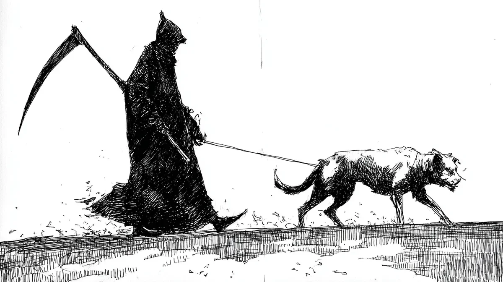

그 개는 여섯 번째 나무에 다리를 들어 올렸다. 아침 일과가 아직 성에 차지 않는 모양이었다.
[The dog lifted its leg at the sixth tree, still not satisfied with the morning’s work.]
‘죽음’은 목줄이 느슨해지는, 그 익숙한 느낌을 받았다. 그는 발톱이 새 나무껍질을 긁는 소리를 들었고, 또 다른 영역 표시를 알리는 톡 쏘는 유황 냄새를 맡았다. 처리해야 할 일들이 쌓여가고 있었다. 그 일들은 텅 빈 눈구멍 너머, 읽지 않은 메일처럼 의무가 기다리는 그 광활하고 무채색의 공간에서 고동치고 있었다.
[Death felt the leash go slack, a familiar give. He heard the scrape of claws on fresh bark, smelled the acrid, sulfurous announcement of another territorial claim. Appointments were stacking up. They pulsed in the vast, colorless blur beyond the sockets, that place where obligations waited like unread mail.]
“늦었다.” ‘죽음’이 말했다. 그 말은 온기라곤 없는, 그저 공기일 뿐이었다.
[”We’re late,” Death said. The words were just air, holding no heat.]
개의 꼬리가 ‘죽음’의 정강이를 한 번 툭 쳤다. 상관없는 일이었다.
[The dog’s tail thumped once against Death’s shin. Irrelevant.]
그들은 공원을 가로질러 갔다. 길모퉁이를 돌던 한 조깅하는 사람이 손목에 갇힌 겁에 질린 새처럼 자신의 맥박이 세차게 고동치는 것을 갑자기 느꼈다. 그네 근처에서 놀던 두 아이는 말로 설명할 수 없는 이유로 잠시 멈춰 서서, 작고 축축한 손바닥을 목의 움푹한 곳에 갖다 댔다. 개는 ‘죽음’의 장화가 턱을 찾기도 전에 모든 연석을 미리 알았다. 녀석은 노란 불에 멈추지 않는 차들을 향해 낮게 으르렁거렸고, 그 진동은 목줄을 타고 전해졌다. 한번은 어두운 골목에서 한 남자가 권총을 더듬거리며 찾을 때, 녀석이 그의 손목을 그대로 물어뜯어 버린 적도 있었다. 그때 ‘죽음’은 그저 뼈만 앙상한 손가락으로 개의 두툼한 목덜미 털을 쓸어 넘겼을 뿐이다. 소리 없는 칭찬은 갈비뼈 사이 어딘가에 박힌 채였다.
[They moved through the park. A jogger, rounding the path, suddenly felt his own pulse throbbing, a frantic bird trapped in his wrist. Two children playing near the swings paused, pressing small, damp palms against the hollow of their throats for a reason they could not name. The dog knew every curb before Death’s boot could find the drop. It growled low at cars that ran yellow lights, a vibration that traveled up the leash. Once, it had bitten clean through a man’s wrist as he fumbled for a pistol in a dark alley. Death had simply run skeletal fingers through the dog’s thick scruff then, the praise silent, lodged somewhere between the ribs.]
이제, 목줄이 팽팽해지며 나무살이 촘촘한 녹색 벤치 앞에서 그들을 멈춰 세웠다.
[Now, the leash went taut, stopping them at a slatted green bench.]
한 노파가 종이봉투에서 빵 부스러기를 던지며 그곳에 앉아 있었다. 비둘기들이 구구거리며 싸웠다. 노파의 숨이 턱 막히며 덜컥거렸고, 숨을 들이켤 때마다 가슴 속 제자리에 더 이상 맞지 않는 무언가에 긁히는 소리가 났다. 그 소리는 마치 자석처럼, 특정한 중력으로 ‘죽음’을 끌어당겼다.
[An old woman sat there, flinging breadcrumbs from a paper bag. The pigeons cooed and fought. Her breath caught and rattled, each inhale scraping against something that no longer fit right in her chest. The sound pulled at Death like lodestone, a specific gravity.]
“여기?”
[”Here?”]
개는 엉덩이를 네모반듯하게 하고 앉았다. 지질학처럼 끈기 있게.
[The dog sat, haunches square, patient as geology.]
‘죽음’이 벤치에 내려앉자, 뼈와 나무가 부딪히는 소리가 났다. 그는 앙상한 무릎 위에 낫의 균형을 잡았고, 그 고대의 곡선이 아침 햇살에 희미하게 빛났다. 여자는 아무것도 없는 곳으로 고개를 돌렸다. 시선은 우윳빛으로 흐렸지만, 긴장으로 솟아있던 어깨는 힘이 빠지며 가라앉았다.
[Death lowered onto the bench, the sound of bone on wood. He balanced the scythe across his bony knees, its ancient curve gleaming dully in the morning light. The woman turned her head toward nothing, her gaze milky, but her shoulders loosened, sinking from their high, tense perch.]
“꽤 오래 걸렸네.” 양파 껍질처럼 얇은 목소리로 그녀가 말했다.
[”Took you long enough,” she said, her voice thin as onion skin.]
“내 동료가 구불구불한 길을 선호해서.”
[”My associate prefers a meandering route.”]
개가 젖은 코로 ‘죽음’의 손을 옆으로 툭 쳤다. 그의 손가락 마디가 여자의 팔에 닿을 때까지 단호하고 고집스럽게 밀었다. 그녀는 내밀어진 손가락을 잡았다. 그녀의 손은 따뜻하고 종이 같았지만, ‘죽음’의 손은 차갑고 단단했다. 완벽한 정반대였다.
[The dog nudged Death’s hand sideways with its wet nose, a firm, insistent push until his knuckles grazed the woman’s arm. She took the offered fingers. Hers were warm and papery; Death’s were cold and unyielding. A perfect antithesis.]
“준비됐나?” ‘죽음’이 물었다.
[”Ready?” Death asked.]
“화요일부터 준비됐지.”
[”Been ready since Tuesday.”]
‘거래’는 순식간에 끝났다. 그것은 발버둥이 아니라, 한숨이었다. 여자의 숨이 그저 멎었을 뿐이다. 비둘기들이 갑작스러운 정적에 놀라 날개를 퍼덕이며 흩어졌다.
[The transaction took no time at all. It was not a struggle, but a sigh. The woman’s breath simply stopped catching. The pigeons scattered in a clap of wings, startled by the sudden stillness.]
‘죽음’이 채 일어나기도 전에 개는 이미 일어서서 횡단보도 쪽으로 몸을 당기고 있었다. 녀석은 코를 들어 공기 냄새를 맡았다. 정확히 동쪽으로 세 블록 떨어진 병원을 향해서였다. 바로 이 순간, 그곳에선 누군가가 하루만 더 달라고 비는 것을 막 멈춘 참이었다.
[The dog was on its feet before Death had even begun to rise, already pulling toward the crosswalk. Its nose lifted, sampling the air, aimed squarely at the hospital three blocks east where someone, at this very second, had just stopped asking for one more day.]
‘죽음’이 일어섰다. 그는 한때 힘줄이 자리했던 뼈에 가죽 목줄을 두 번 감으며, 앞으로 당기는 그 익숙하고도 필요한 힘을 느꼈다. 개는 다음 일을 갈망하며 하네스에 몸을 기댔다. ‘죽음’은 반보 뒤에서 발을 끌며 걸었고, 낫 자루가 보도에 부딪히며 개의 발톱 소리와 일정한 리듬으로 딸깍거렸다.
[Death stood. He wrapped the leather leash twice around the bones where tendons used to anchor, feeling the familiar, necessary tug forward. The dog leaned into its harness, eager for the next thing. Death shuffled half a step behind, the scythe’s handle clicking against the pavement, a steady rhythm in time with the dog’s toenails.]